Game Economy Simulator
Game Economy Simulator is a playable template of a hero collection game, made for the second-year Game Design students at Isart Digital to design and test a game economy. All the game data (heroes, abilities, levels, buildings, upgrades, shop...) is made in Google Sheets, then imported into Godot in one click, so the students can play with their numbers right away. I worked on it in a team of 3, where I programmed most of the gameplay systems and the data pipeline.
Data Pipeline
The main goal of the project is to let designers balance the game without touching Godot.
- Wrote a Google Apps Script that exports every sheet of the spreadsheet to JSON. Designers mark their tables with
[Table Start],[Table End]and[Ignore]tags. - Made a data parser panel inside the Godot editor that downloads the JSON and generates the game resources: heroes, abilities, campaigns, levels, rewards, upgrades, buildings, shop offers and lootboxes.
- Added a build button, error logs and checks for missing references, so a mistake in the spreadsheet is easy to find.
- Made editor tools to fill data arrays, and an editor profile that simplifies the Godot editor for students.
How to use it
- Publish the Apps Script as a web app, then paste its URL in the Project Settings (one URL per type of data).
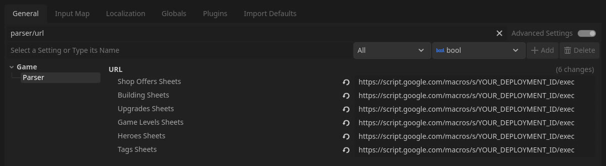
- In the Parser panel, click Build Game to pull everything at once, or pick one type of data and click Parse Data.
- The parser creates or updates the resources in the
parsed_datafolder, ready to be used by the game.
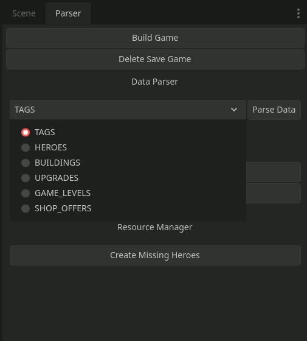
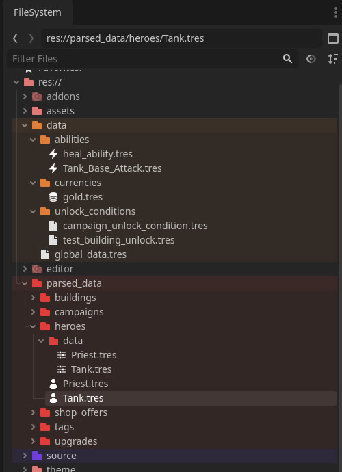
Combat
- Implemented an automatic combat system: a combat server, an attack queue and a damage/heal formula based on ability power.
- Made an ability targeting system (AoE, closest, weakest/strongest, tagged heroes).
- Made the combat field, the team builder, the hero details panel and a pause menu.
- Added a combat log and a speed debugger to test fights faster.
- Added feedbacks: damage/heal numbers, flash, squish animation and death sprites.
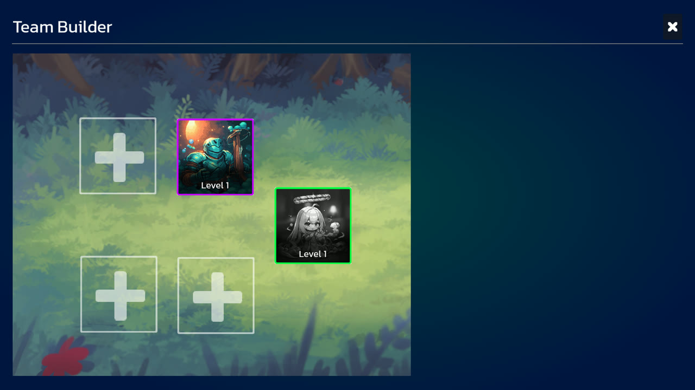
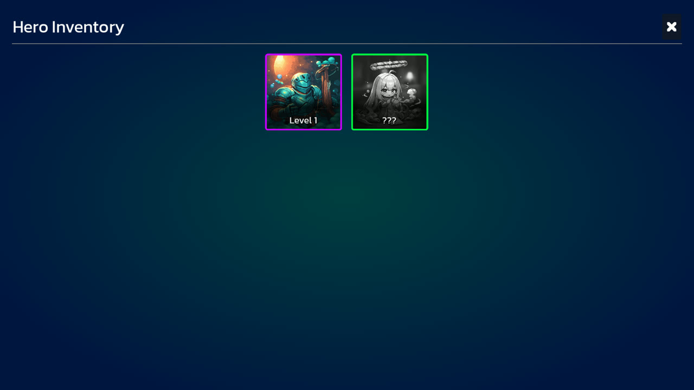
Progression
- Campaigns and levels with selection, unlocking, progression and rewards.
- Buildings with upgrades, costs and build times.
- Unlock conditions that give their rewards only once.
- Lootboxes and currencies in the shop.
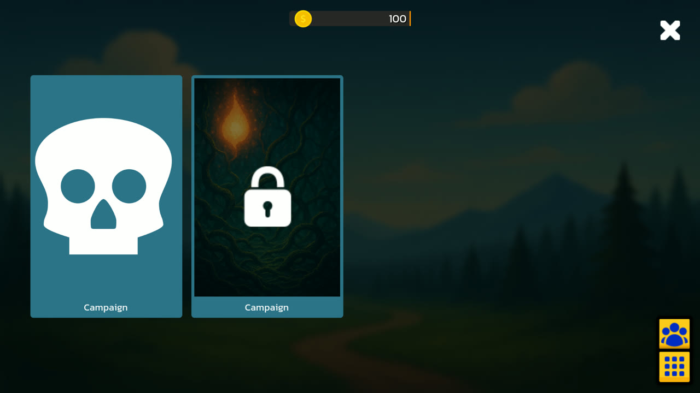
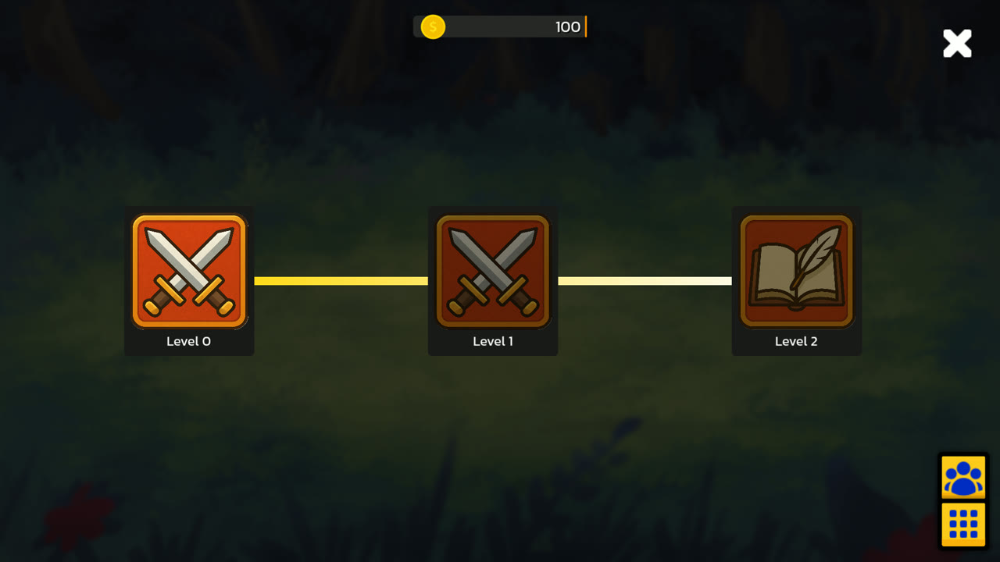
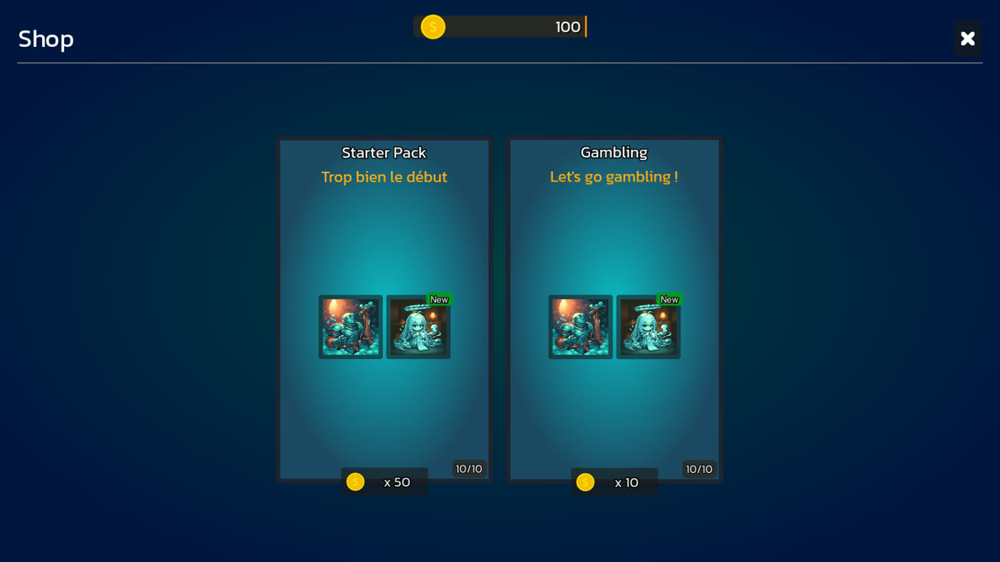
Save System and UI
- Made a dynamic save system that saves the inventory, the progression and the building timers, with a "Delete save" button for debugging.
- Added the settings panel, and the victory/defeat panels with reward animations and sound effects.
Games Made With It
The second-year Game Design students at Isart Digital used the project as a base for their own games. They designed their own heroes, resources, buildings and campaigns in the spreadsheets, and replaced the art, without changing the code.
Les Aventures de Fercule
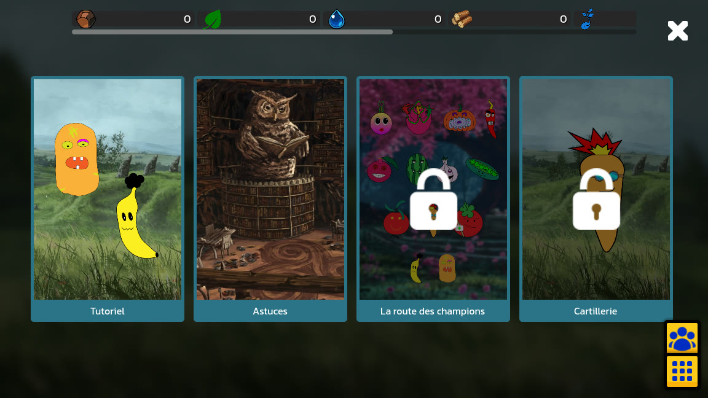
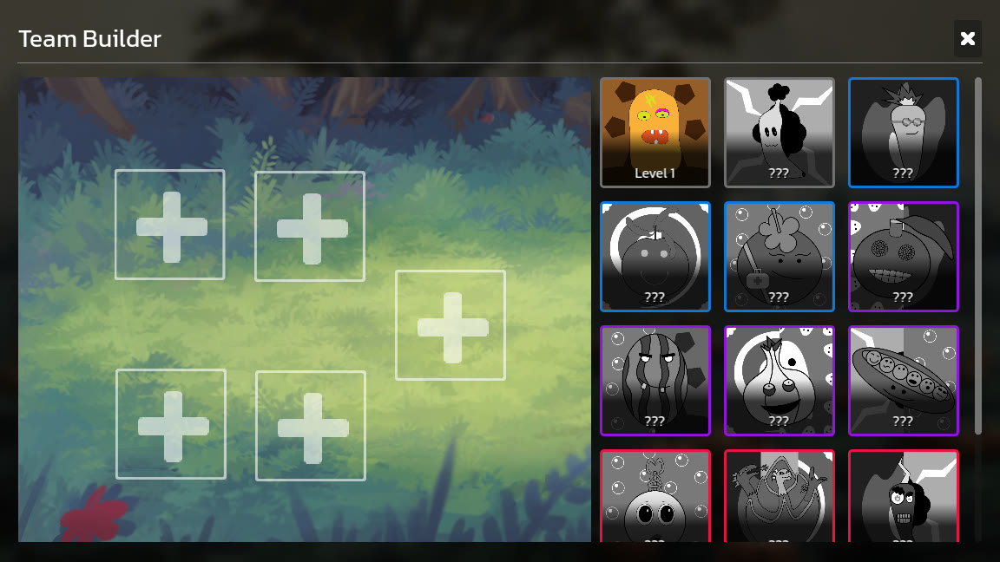
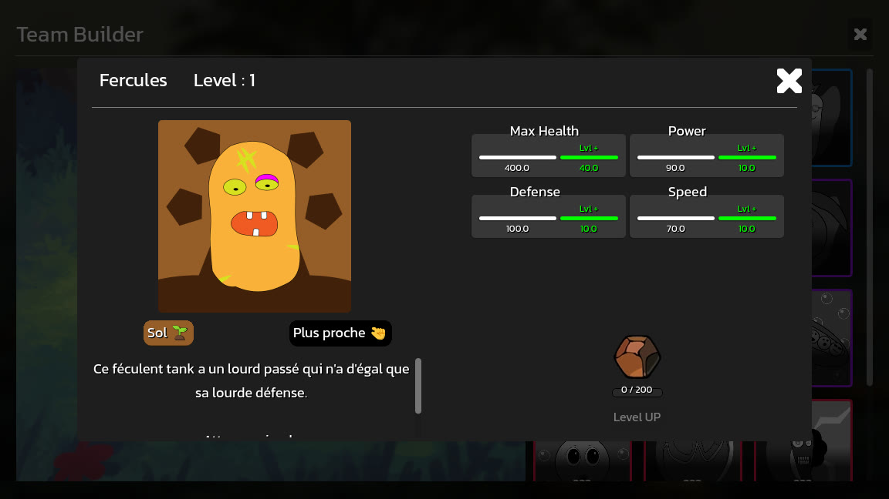
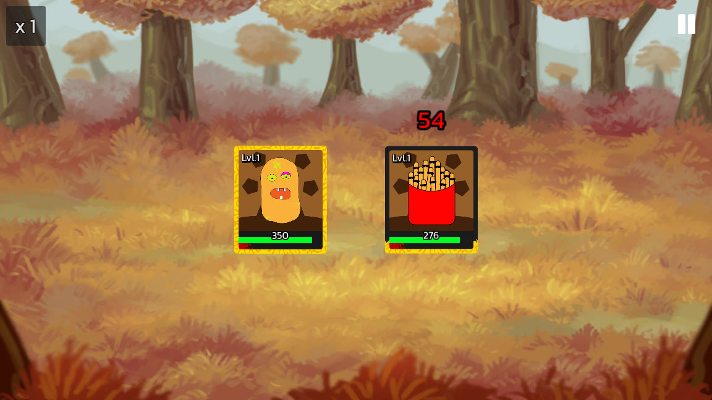
Team Goobers
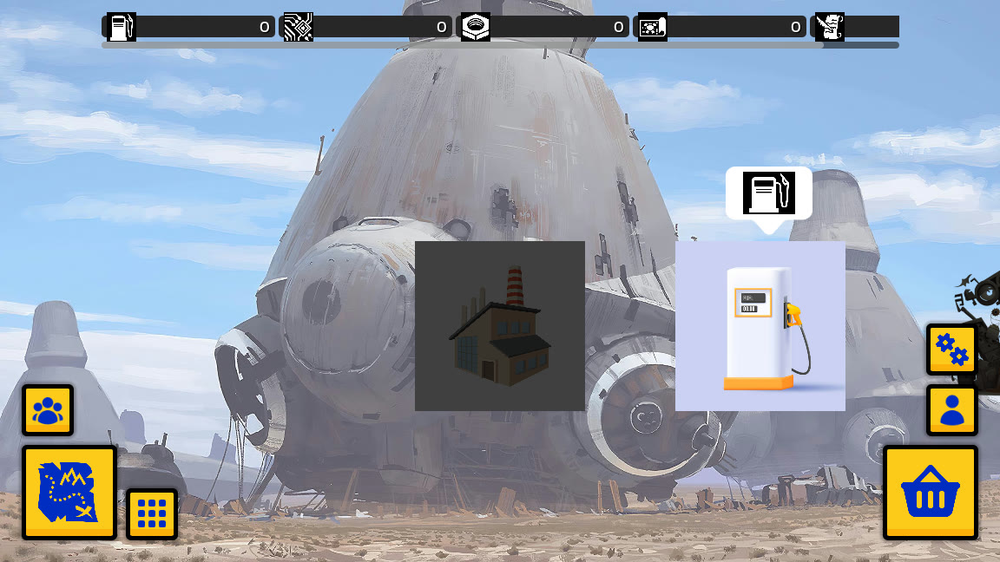
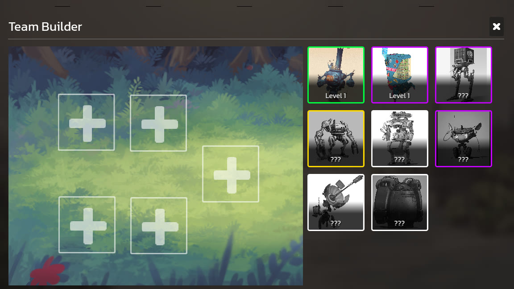
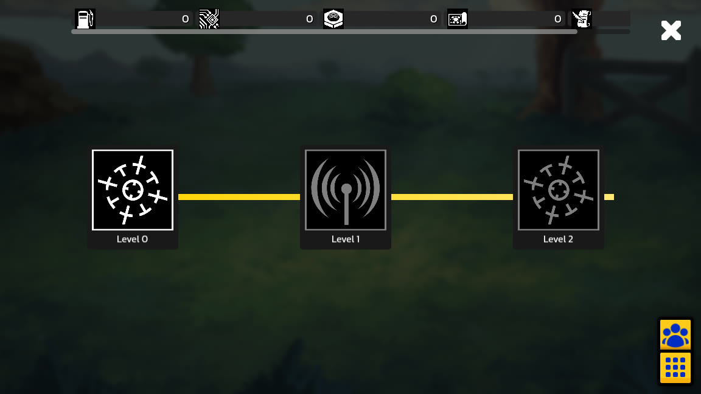
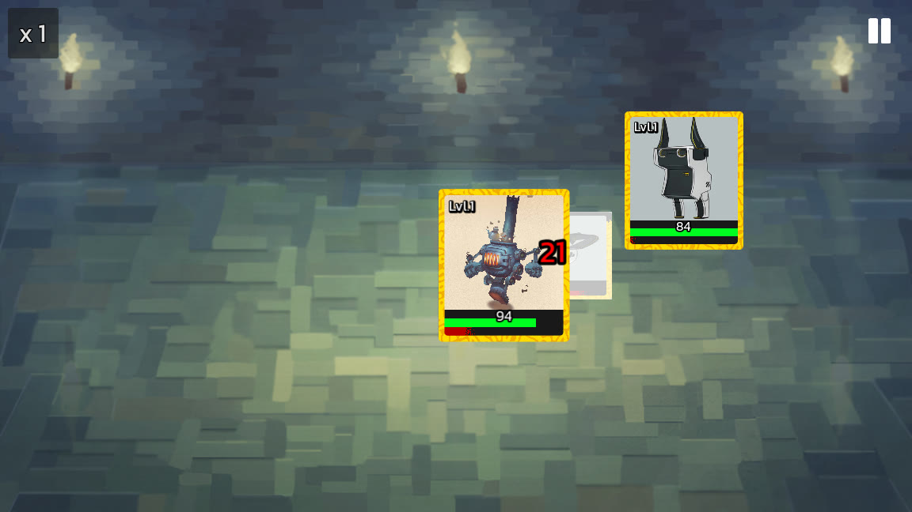